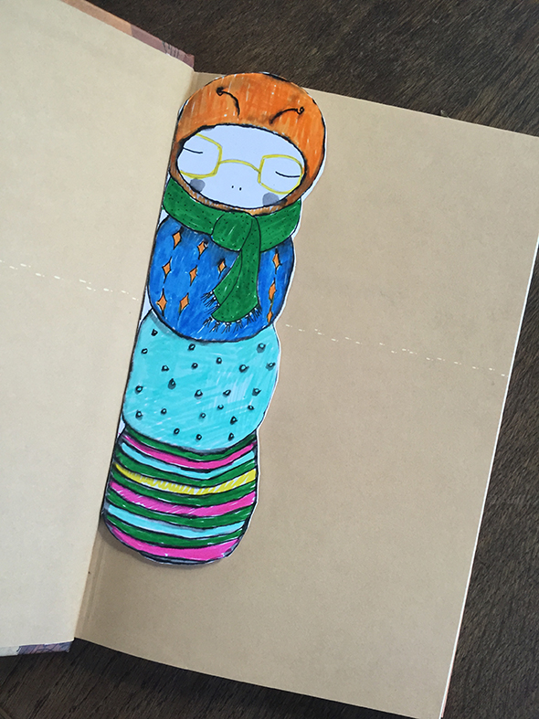
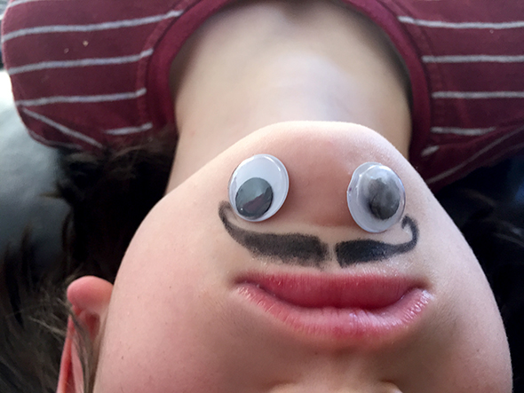
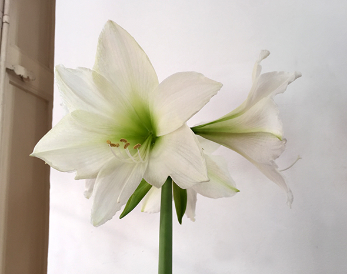
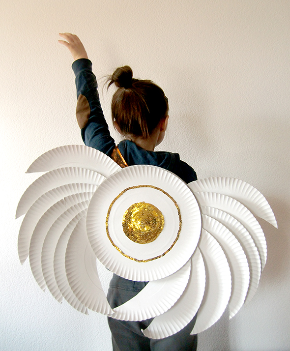
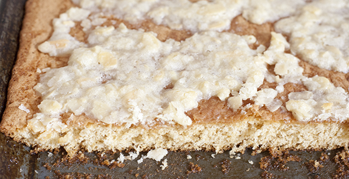

Pinterest
Instagram
ES
EN
DE
☰ Menü
Home
Das Haus
Zubehör
Dekoration
Faltanleitung
Illustration
Trinkflaschen
Bastelheft
App
Blog
Feste
Weihnachten
Ostern
Halloween
Fasching & Kostüme
Valentinstag
Geburtstag
Mutter-/Vatertag
Schulanfang
Jahreszeiten
Frühling
Sommer
Herbst
Winter
Was machen
Spielzeug
Spiele
Druckvorlagen
Essen & Rezepte
Dekoration
Malen
Experimente
Draußen
Lernen
Tiere
Geschenke & Schmuck
Bauen & Tricks
Weitere Ideen
Material
Papier
Karton
Papierrollen
Recycling
Steine
Blätter & Natur
Stoff & Nähen
Start
›
Blog
Blog
Feste
Weihnachten
68
Ostern
41
Halloween
26
Fasching & Kostüme
36
Valentinstag
15
Geburtstag
13
Mutter-/Vatertag
4
Schulanfang
10
Jahreszeiten
Frühling
19
Sommer
42
Herbst
22
Winter
32
Was machen
Spielzeug
79
Spiele
125
Druckvorlagen
47
Essen & Rezepte
95
Dekoration
94
Malen
64
Experimente
19
Draußen
64
Lernen
67
Tiere
111
Geschenke & Schmuck
89
Bauen & Tricks
81
Weitere Ideen
46
Material
Papier
92
Karton
61
Papierrollen
23
Recycling
121
Steine
33
Blätter & Natur
52
Stoff & Nähen
42
Herz
Cranberry-Herzen
Herz
Pfirsich mit Herz
Herz
Kekse mit Marmeladenherz
Druckvorlagen
Bücherwurm-Lesezeichen

Aktivität
Willst du lachen?

Herz
Nachricht in der Nuss
Anlass
Eine Amaryllis beobachten

Herz
Valentinsherz
Herz
Wachsscheiben fürs Fenster
Verkleidung
Kostümflügel

Magnet
Magnet-Eiskunstläuferin
Essen
Lutscher in Teelichtförmchen
Druckvorlagen
Male deine Familie!
Anlass
Macarenas Dreikönigskekse
Winter
2015
Essen
Ingelas Schokokuchen
Essen
Kekse als Geschenkdeko
Anlass
Weihnachtskugeln aus Pappmaché
Anlass
Eichel-Engel
Anlass
Baumschmuck aus weißem Ton
Papierrollen
Kranz aus Klorollen
Anlass
Wunschzettel für die Könige und den Weihnachtsmann
Anlass
Adventskalender mit Türen
Nachtisch
Horchata-Kuchen

← Neuere
Seite 10 / 39
Ältere →